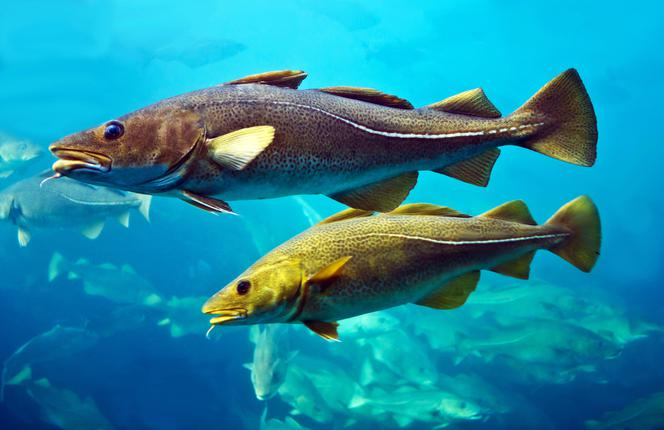
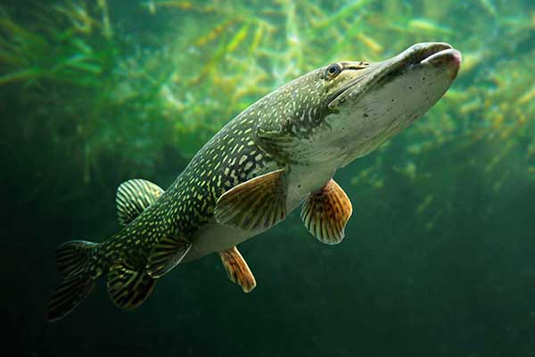
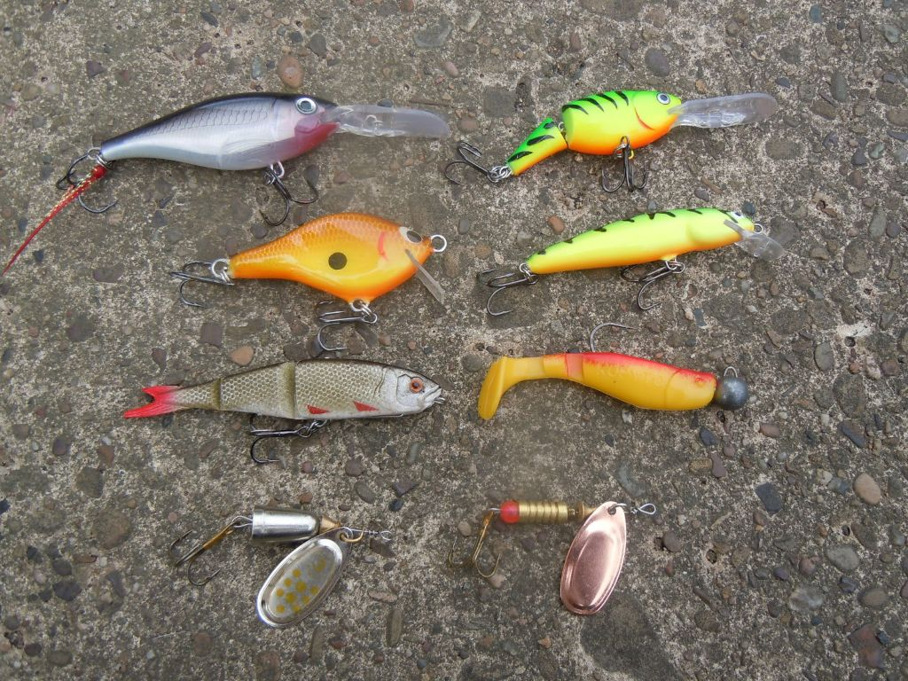

Dorsz atlantycki (Gadus morhua) to popularna ryba morska żyjąca w chłodnych wodach Oceanu Atlantyckiego oraz Morza Bałtyckiego. Charakteryzuje się wydłużonym ciałem, jasnym brzuchem i charakterystycznym wąsikiem pod pyskiem. Dorasta zazwyczaj do około 50–100 cm długości, choć większe okazy mogą przekraczać nawet 150 cm i ważyć ponad 40 kg. Jest rybą drapieżną żyjącą głównie przy dnie morskim, gdzie poluje na mniejsze ryby i skorupiaki. Dorsza można łowić przede wszystkim w Morzu Bałtyckim, Norwegii, Islandii oraz Morzu Północnym. W Polsce najczęściej poławiany jest podczas rejsów kutrami z portów takich jak Hel, Władysławowo czy Kołobrzeg. Do połowu używa się głównie pilkerów, gumowych przynęt oraz martwych rybek imitujących naturalny pokarm dorsza. Najlepsze efekty osiąga się podczas łowienia przy dnie metodą pionową lub spinningową, szczególnie wiosną i jesienią, kiedy ryby są najbardziej aktywne.

Szczupak pospolity (Esox lucius) to jedna z najbardziej znanych ryb drapieżnych występujących w polskich wodach słodkich. Charakteryzuje się długim, smukłym ciałem, dużą paszczą z ostrymi zębami oraz zielonkawym ubarwieniem z jasnymi plamami. Może osiągać ponad 100 cm długości i ważyć nawet kilkanaście kilogramów. Szczupak zamieszkuje jeziora, rzeki, starorzecza oraz zbiorniki zaporowe, najczęściej przebywając w pobliżu roślinności wodnej, trzcin i zatopionych przeszkód. Jest bardzo skutecznym drapieżnikiem żywiącym się głównie mniejszymi rybami, żabami oraz drobnymi organizmami wodnymi. Najlepszy okres na połów szczupaka przypada na wiosnę i jesień, kiedy ryba jest najbardziej aktywna. Szczupaka łowi się głównie metodą spinningową lub trollingową, prowadząc przynętę w pobliżu dna albo przy podwodnej roślinności.

Do połowu szczupaka najczęściej wykorzystuje się sztuczne przynęty imitujące małe ryby. Bardzo popularne są gumowe rippery i twistery, które skutecznie pracują w wodzie i przyciągają drapieżnika ruchem. Wędkarze często używają również woblerów, błystek obrotowych oraz wahadłowych, które sprawdzają się zarówno w jeziorach, jak i rzekach. Skuteczne bywają także martwe rybki stosowane jako naturalna przynęta. Najlepiej wybierać większe i wyraźnie pracujące przynęty w kolorach srebrnych, zielonych lub jaskrawych, szczególnie podczas połowu w mętnej wodzie. Szczupak najczęściej atakuje przynętę gwałtownie z ukrycia, dlatego prowadzenie powinno być spokojne i nieregularne, aby przypominało ruch osłabionej ryby.